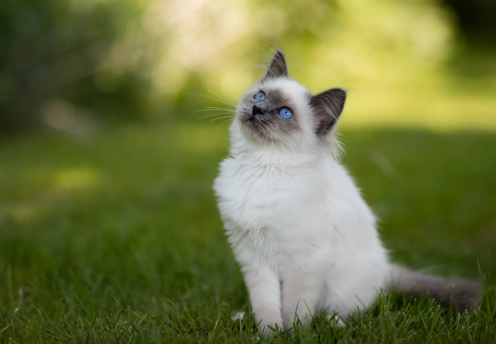
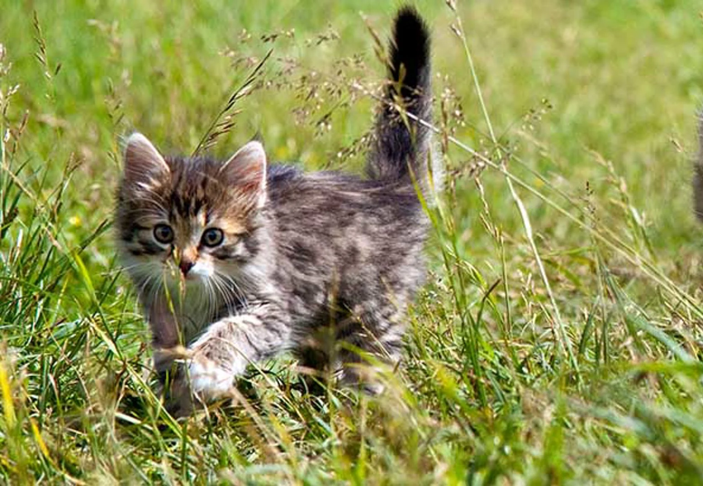

Pelle söker nytt hem!
Pelle är en väldigt mysig katt, dessvärre ville inte hans föräldrar ha honom, så nu söker han nya kärleksfulla föräldrar.

Pelle är en väldigt mysig katt, dessvärre ville inte hans föräldrar ha honom, så nu söker han nya kärleksfulla föräldrar.

Tina hittades övergiven vid en soptunna, hon mår bra men söker ett nytt underbart hem.